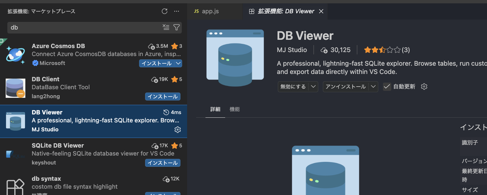
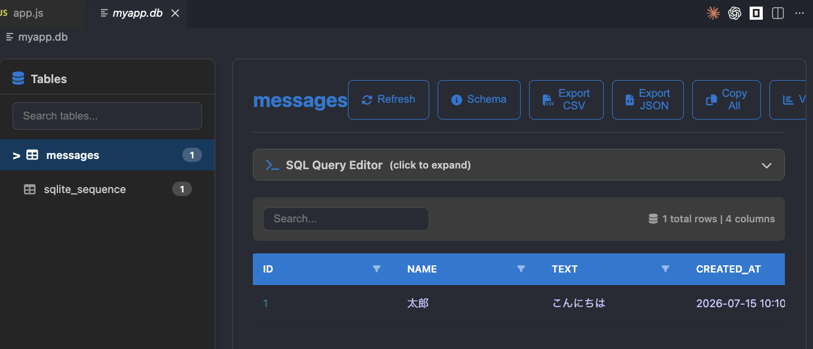

前回はアバタのposition・rotation・idなどのデータをJSON形式 で整理し、Socket.IOで送受信したうえで、fs.writeFileSync で JSONファイル（players.json）に保存 する方法まで学びました。JSONファイルにしておけば、サーバを再起動してもデータは残ります。複数の接続が同時に書き込むとファイルが壊れやすく 、また「特定の条件で検索する」「一部だけ更新する」「件数を集計する」といった操作が苦手 で、毎回ファイル全体を読み書きするためデータが増えると非効率です。今回はデータベース（SQLite） を導入し、これらを解決しながらJSONデータを永続化する方法を学びます。
クライアント（ブラウザ）
A-Frame + Socket.IO Client
サーバ（Node.js）
Express + Socket.IO Server
データベース（SQLite）
better-sqlite3 / ファイル保存
メッセージ送信フロー
1. メッセージ送信
socket.emit('chat', data)
2. DBに保存
INSERT INTO messages
3. 全員に配信
io.emit('chat', saved)
4. 画面に表示
DOM 更新
新規ユーザ接続フロー
新規ユーザ接続
connection イベント
DBから読み込み
SELECT * FROM messages
履歴を送信
socket.emit('history', rows)
データベースにより、サーバ再起動後もデータが保持され、新規ユーザにも過去の状態を送信できる
この回では説明の途中にも実際に手を動かして試すコードが出てきます。まず、コードを保存する場所を用意しましょう。
S:\Web_Prog の中に Web13VS Code で「ファイル」→「フォルダーを開く」 から S:\Web_Prog\Web13 を開く
VS Code のターミナル（表示 → ターミナル または Ctrl+` ）を開いておく
この後の説明で ○○.js というコードが出てきたら、VS Codeで「ファイル」→「新規テキストファイル」 を作り、コードをコピー＆ペーストして同じファイル名で保存 し、ターミナルで node ○○.js と入力して実行します（保存し忘れると古い内容のまま実行されるので注意）。今回は better-sqlite3 というパッケージも使うので、1.3 で npm install を1回だけ実行 します（手順はそこで案内します）。
1.1 なぜデータベースが必要か
メモ帳に書いた内容は、メモ帳を閉じると消えます。でもノートに書いておけば、次に開いたときもそのまま残っています。
チャットアプリ（第9〜11回）ではデータをサーバのメモリ（変数）だけに持っていたため、再起動で消えていました。第12回のアバター同期では players.json というJSONファイルに保存 して、再起動後も残せるようにしました。保存方法は3段階で考えると整理しやすくなります。
保存方法 特徴 サーバ再起動時 メモリ（変数） 高速だがプロセス終了で消える すべてのデータが消失 JSONファイル （第12回）手軽に永続化できるが、同時書き込みで壊れやすく、検索・部分更新・集計が苦手 データは残る データベース （今回）ファイルに永続保存され、検索・更新・集計を安全に行える データが残る
下の図は両端の対比（メモリ＝揮発 / DB＝永続）を示しています。JSONファイルはその中間で、「残せるが規模が大きくなると扱いにくい」ため、今回はデータベースに置き換えます。
サーバ再起動時の差 ── メモリ消滅 vs DB 永続化
メモリ（変数）
サーバプロセス内
データベース（chat.db）
ディスク上のファイル
サーバ Node.js
PID 12345 → 67890
プロセス番号が変わる
＝ メモリは新品
揮発性
電源切れ
で消える
不揮発性
電源切れ
でも残る
メモリ保持・JSONファイルで残る課題:
メモリだけに持っているチャットの履歴は、再起動で全部消える
JSONファイルでも残せるが、複数人が同時に書き込むとファイルが壊れやすい
「特定の人の発言だけ探す」「件数を数える」といった検索・集計が手軽にできない
データが増えても、毎回ファイル全体を読み書きするので効率が落ちる
そもそもコンピュータは、データを「どこに置くか」で残り方が決まります。 身近な順に並べると、記憶には次の段階があります。上ほど速いが消えやすく、下ほど確実に残ります。
段階 保存する場所 この授業での例 速さ 電源を切る／再起動すると 向いている用途
① 変数（メモリ・RAM） CPUのすぐ近くにある高速な作業用メモリ
let messages = []let players = {}◎ 最速
消える （揮発性）計算中・処理中の一時データ
② ファイル（ディスク） SSD／ハードディスク上のファイル
players.json（第12回）△ 遅い
残る （不揮発性）手軽な保存。ただし検索・部分更新・同時書き込みは苦手
③ データベース（ディスク） ディスク上のデータベース専用ファイル
app.db（SQLite・今回）○ 速い
残る （不揮発性）検索・更新・集計を安全・効率的に行う
④ 外部DB・クラウド ネットワーク上の別のサーバ
MySQL / PostgreSQL 等（発展・この授業では扱わない）
○ 速い
残る （不揮発性）大人数・複数台のサーバでデータを共有する本番サービス
①メモリ（RAM）は「机の上」 ──すぐ手が届いて速いけれど、帰るときに片付けられて消えてしまいます。②③のディスクは「引き出しや本棚」 ──しまっておけば明日も残っています。データベース（③）は、その本棚を「探しやすく・壊れにくく」整理したもの です。第11回まではデータを机の上（メモリ）に置いていたので再起動で消え、第12回で本棚（JSONファイル）にしまえるようにし、今回はその本棚をデータベースに置き換えます。
データベースを使えば、これらの問題をすべて解決できます。
1.2 SQLite とは
読み方:
SQL = エスキューエル （または「シークエル」、Structured Query Language の略）。
SQLite = エスキューライト （"SQL" ＋ "lite"（軽い）。発音は「シークライト」とも）。
better-sqlite3 = ベター・エスキューライト・スリー （Node.js 用パッケージ名）。
INSERT = インサート 、SELECT = セレクト 、UPDATE = アップデート 、CREATE TABLE = クリエイト・テーブル 、AUTOINCREMENT = オート・インクリメント （自動加算）、PRIMARY KEY = プライマリ・キー （主キー）。
大きな図書館（MySQL, PostgreSQL）は管理人が常駐し、たくさんの人が同時に使えますが、設置が大変です。SQLite は「自分だけの小さな本棚」のようなもので、設置不要ですぐに使えます。
SQLite は、ファイルベースの軽量なリレーショナルデータベース です。「リレーショナル」とは、データを Excelのような「表（テーブル）」の形 で管理する方式のこと。まずはデータベースを扱ううえで必ず出てくる基礎用語 を押さえましょう。
データベースの基礎用語
用語 読み方 意味 身近なたとえ データベース（DB） — データを整理して保存し、あとから検索・追加・更新できるようにした仕組み 資料をしまう本棚全体 リレーショナルDB（RDB） — データを「表（テーブル）」の形で管理するデータベース。SQLite もこの一種 表計算シートの集まり テーブル — 1種類のデータをまとめた「表」。Excel の1シートに相当 1冊の名簿 カラム（列） — データの項目 。表の縦方向。例: id / name / text 名簿の「氏名」「電話番号」欄 レコード（行） — 1件分 のデータ。表の横1行。例: 太郎の1つの発言名簿の1人分の行 主キー（PRIMARY KEY） プライマリ・キー 各レコードを重複なく区別する ための列。ふつう id を使う 出席番号・社員番号 SQL エスキューエル データベースを操作するための言語 （作る・入れる・取り出すなど） 本棚係への指示書
※ 「テーブル・カラム・レコード」の具体的なイメージは、次の 1.4 で messages テーブルの例を使ってもう一度確認します。
SQLite の特徴
特徴 説明 サーバ不要 別途データベースサーバを起動する必要がない（組み込み型） ファイルベース データベース全体が1つのファイル（例: chat.db）に保存される 軽量 インストールが簡単で、小〜中規模のアプリに最適 SQL対応 標準的なSQL文でデータを操作できる
SQLite vs MySQL / PostgreSQL
MySQL や PostgreSQL は大規模なサービス向けですが、この授業で作る規模のアプリなら SQLite で十分 です。設定もインストールも簡単で、学習コストが低いのが利点です。
1.3 better-sqlite3 パッケージ
Node.js から SQLite を操作するには better-sqlite3 というパッケージを使います。冒頭の「準備」で開いた Web13 フォルダ に、このパッケージを入れましょう。
パッケージのインストール（最初に1回だけ）
VS Code で S:\Web_Prog\Web13 を開いていることを確認する（冒頭の「準備」で開いたフォルダ）
VS Code のターミナル（表示 → ターミナル または Ctrl+` ）で以下を実行する
Terminal
npm init -y
npm install better-sqlite3@12npm init -y で package.json が作られ（このフォルダが1つの Node.js プロジェクトになる）、npm install better-sqlite3@12 で node_modules フォルダと package-lock.json が自動で作られます（手で編集する必要はありません）。
npm init -y は「新しい工作用の机を用意する」作業、npm install better-sqlite3@12 は「その机に道具箱（部品）を1つ置く」作業です。机（プロジェクト）ごとに、必要な道具（パッケージ）を入れていきます。
⚠ 注意: better-sqlite3 はネイティブモジュールで、Node.js のバージョンに合ったビルド済みバイナリを使います。この授業の Node.js 20 で確実に動くよう、必ず @12 を付けてバージョンを固定してください（express@4 と同じ考え方です）。
基本的な使い方:
JavaScript
// better-sqlite3 を読み込む
const Database = require ('better-sqlite3' );
// データベースファイルを開く（なければ自動作成）
const db = new Database ('myapp.db' );new Database('myapp.db') は「myapp.db というファイルを開く （無ければ新しく作る ）」という命令です。ただし注意してほしいのは、この2行をエディタに書いただけでは、ファイルは1つもできません 。次の「どこに書いて、どうやって実行する？」の手順で実際に実行（node app.js）して初めて 、myapp.db が作られます。
このコードはどこに書いて、どうやって実行する？
上のコードは、冒頭の「準備」で開いた Web13 フォルダ （1.3で npm install 済み）の中に新しいファイルを1つ作って 書きます。ブラウザではなく、Node.js（ターミナル）で実行 します。
ファイルを作る ：VS Code で Web13 を開いた状態で、新しいファイル app.js を作成する（左の一覧で「新しいファイル」アイコン、またはメニュー「ファイル」→「新規ファイル」）。コードを貼り付けて保存 ：上の2行（require と new Database）を app.js に貼り付け、Ctrl +S で保存する。実行する ：ターミナルで次を入力して Enter 。Terminal
node app.js
成功の確認： このコードは画面には何も表示しません が、実行後に Web13 フォルダの中に myapp.db というファイルが新しくできていれば成功 です（VS Code 左のファイル一覧に現れます。実行した node のカレントフォルダ ＝いま開いている Web13 の中に作られます）。メッセージで確認したいときは、末尾に console.log('DBを開きました'); を足すと、実行時に文字が表示されます。
⚠ 「Cannot find module 'better-sqlite3'」と出たら、そのフォルダで npm install better-sqlite3@12 をまだ実行していないのが原因です（1.3の準備手順を先に）。
ここで作られた myapp.db は、まだ「空っぽ」です
できあがった myapp.db を確認すると、実は0バイト（中身ゼロ）のファイル です。new Database() は「箱（ファイル）を用意した」だけで、まだデータを入れる「表（テーブル）」が1つもありません 。この状態では、データを保存することはできません。
次の 1.4 でテーブルを作る（CREATE TABLE） と、そこで初めてファイルに中身が書き込まれ（0バイト → 数KBに増える）、データを保存・検索できる本当に使えるデータベース になります。
段階 実行する命令 myapp.db の状態① ファイルを開く new Database('myapp.db')0バイトの空ファイルができる（表はまだ無い） ② 表を作る（1.4） db.exec('CREATE TABLE ...')中身が書き込まれ、データを入れられる状態になる ③ データを入れる（1.4） insert.run(...)1行ずつデータが保存される
つまり「new Database だけ」ではなく、「ファイルを開く → 表を作る → データを入れる」の3段階 そろって、はじめてデータベースとして役立ちます。
用語
永続化（Persistence） プロセスが終了してもデータを失わないようにファイルやデータベースに保存すること。 SQLite サーバプロセス不要で動作する軽量なリレーショナルデータベース。データベース全体が1つのファイルに格納される。 better-sqlite3 Node.js から SQLite を同期的に操作するためのパッケージ。非同期 API より扱いやすい。 プリペアドステートメント SQL文のテンプレートを事前にコンパイルし、パラメータだけを差し替えて実行する方式。SQLインジェクション対策として有効。
1.4 基本的なSQL文
SQL （Structured Query Language）は、データベースを操作するための言語です。以下の4つが基本です。
SQL文 意味 例 CREATE TABLE テーブル（表）を作成する CREATE TABLE messages (id INTEGER PRIMARY KEY, text TEXT)INSERT INTO データを追加する INSERT INTO messages (text) VALUES ('こんにちは')SELECT データを取得する SELECT * FROM messagesUPDATE データを更新する UPDATE messages SET text = '修正' WHERE id = 1
テーブルとは
テーブルはExcelのシートのようなものです。列（カラム） がデータの種類、行（レコード） が個々のデータを表します。
id name text created_at 1 太郎 こんにちは 2026-07-15 16:30:00 2 花子 やあ！ 2026-07-15 16:30:15 3 太郎 元気？ 2026-07-15 16:30:30
better-sqlite3 での書き方:
JavaScript
// テーブルを作成
db.exec (`
CREATE TABLE IF NOT EXISTS messages (
id INTEGER PRIMARY KEY AUTOINCREMENT,
name TEXT NOT NULL,
text TEXT NOT NULL,
created_at TEXT DEFAULT (datetime('now', 'localtime'))
)
` );
// データを追加（プリペアドステートメント）
const insert = db.prepare ('INSERT INTO messages (name, text) VALUES (?, ?)' );
insert.run ('太郎' , 'こんにちは' );
// データを全件取得
const rows = db.prepare ('SELECT * FROM messages' ).all ();
console.log (rows);
// → [{ id: 1, name: '太郎', text: 'こんにちは', created_at: '2026-07-15 16:30:00' }]
このコードはどのファイルに書いて実行する？
上のコードは説明用の抜粋 で、そのままでは動きません。db（＝データベース）を使っていますが、その db を用意する 1.3の2行が書かれていない からです。動かすには、1.3で作った app.js の続きに、この抜粋を貼り足します 。
手順
Web13 フォルダの app.js（1.3で作ったファイル）を開くconst db = new Database('myapp.db'); の次の行 に、上の抜粋（db.exec(...) 以下）をまるごと貼り付ける Ctrl +S で保存し、ターミナルで node app.js を実行する
貼り足すと、app.js の全体は次のようになります（これが「つなげた完成形」です）:
JavaScript ── app.js（1.3の2行 ＋ 1.4の抜粋）
const Database = require ('better-sqlite3' );
const db = new Database ('myapp.db' );
// ↓ ここから下が 1.4 の抜粋（db を使う部分）
db.exec (`
CREATE TABLE IF NOT EXISTS messages (
id INTEGER PRIMARY KEY AUTOINCREMENT,
name TEXT NOT NULL,
text TEXT NOT NULL,
created_at TEXT DEFAULT (datetime('now', 'localtime'))
)
` );
const insert = db.prepare ('INSERT INTO messages (name, text) VALUES (?, ?)' );
insert.run ('太郎' , 'こんにちは' );
const rows = db.prepare ('SELECT * FROM messages' ).all ();
console.log (rows);実行結果: ターミナルに [{ id: 1, name: '太郎', text: 'こんにちは', created_at: '...' }] のように、追加した1件が表示されます。
※ app.js に追記するかわりに、上の完成形を try-messages.js など別名で保存して node try-messages.js で実行してもかまいません。
SQL基本動作 ── CREATE → INSERT → SELECT のステップ
messages テーブル
id
name
text
created_at
1
太郎
こんにちは
16:30:00
2
花子
やあ！
16:30:15
CREATE: 構造を作る
INSERT: 行を追加
SELECT: 行を取得
id は AUTOINCREMENT
やってみよう（1分）
insert.run を2回実行した後、SELECT * FROM messages は何件返すか、AUTOINCREMENT の id 値はどうなるか、まず頭の中で予測 してみよう。予測できたら、上の app.js に insert.run をもう1行足して実行し、答え合わせしよう（答えは後半の【例題】解答にもあります）。
Notionに記録: 予測した件数と各行の id 値を書いてください。
プリペアドステートメントとは？
? をプレースホルダとして使い、後から値を渡す方法です。SQL文に直接値を埋め込むよりも安全 （SQLインジェクション対策）で高速 です。
1.5 データベースの中身を目で見る（DB Viewer 拡張）
ここまでは console.log でデータベースの中身を確認してきましたが、毎回コードを書いて実行するのは大変です。VS Code の拡張機能 「DB Viewer」 を入れると、.db ファイルをクリックするだけで、Excelのような表 で中身を見られます。
① 拡張機能をインストールする
VS Code の左端の拡張機能アイコン （四角が4つのマーク）をクリックする
検索欄に DB Viewer と入力する
「DB Viewer」（作者: MJ Studio） を選び、インストール を押す
VS Code — 拡張機能: マーケットプレース

DB Viewer（MJ Studio） をインストール。.db / .sqlite ファイルを表形式で開ける拡張機能です。
② myapp.db を開いて中身を見る
1.3〜1.4で作った Web13 フォルダの myapp.db を、左のファイル一覧でクリック します。messages テーブルを選ぶと、保存されている行が表で表示されます。
VS Code — myapp.db（DB Viewer）

app.js で insert.run('太郎', 'こんにちは') した1件が、id / name / text / created_at の列とともに表示されている。console.log と同じ内容を、コードを書き換えずに見られる。
画面から読み取れること
messages テーブルに1行 ：id=1 / 太郎 / こんにちは / 2026-07-15 10:10。id は AUTOINCREMENT で自動採番される。1 total rows / 4 columns ：件数と列数がひと目で分かる（列は id・name・text・created_at の4つ）。sqlite_sequence というテーブルは、AUTOINCREMENT が「次に使う番号」を覚えておくためにSQLiteが自動で作る管理用テーブル。上部の SQL Query Editor を開けば、SELECT * FROM messages などのSQLをその場で試せる。
※ データを追加・変更したあとに表が古いままなら、Refresh ボタン（または .db を開き直す）で最新の状態に更新できます。
1.6 チャット履歴の保存
チャットメッセージをデータベースに保存 すれば、サーバを再起動しても消えません。まずこの節では、「メッセージを受け取ったらDBに保存し、いまつながっている全員に配信する」 ところまでを作ります。
あらかじめ messages テーブルを用意しておく（CREATE TABLE IF NOT EXISTS）
メッセージを受け取るたびに INSERT INTO messages でDBに保存する
保存したメッセージを io.emit で接続中の全員 に配信する
チャットはサーバ側（server.js）とクライアント側（public/index.html）の2つのファイル で動きます。Web13 フォルダの直下に server.js、Web13/public/ の中に index.html を置きます。
先にパッケージを追加する（Web13 フォルダで1回だけ）
server.js では express と socket.io も使います。1.3 で入れた better-sqlite3 に加えて、次を1つずつ 実行してください（第9〜11回と同じ、古いNode.jsでも動くバージョンで固定）。まとめて実行すると失敗しやすい ので、1行ずつ入力して Enter → 完了を待ってから次を実行します:
Terminal ── ① まず express
npm install express@4Terminal ── ② 完了したら socket.io
npm install socket.io@1.7.4※ 1.3の npm install better-sqlite3@12 が済んでいれば、このフォルダには express@4・socket.io@1.7.4・better-sqlite3@12 の3つが入った状態になります（package.json で確認できます）。
① サーバ側 — server.js（Web13 直下）
JavaScript — server.js
const express = require ('express' );
const socketIo = require ('socket.io' );
const Database = require ('better-sqlite3' );
const app = express ();
app.use (express.static ('public' ));
const server = app.listen (3000 , () => {
console.log ('http://localhost:3000 でサーバ起動' );
});
const io = socketIo (server);
// データベースを開く（なければ chat.db を作成）
const db = new Database ('chat.db' );
// メッセージを保存する messages テーブルを用意
db.exec (`
CREATE TABLE IF NOT EXISTS messages (
id INTEGER PRIMARY KEY AUTOINCREMENT,
name TEXT NOT NULL,
text TEXT NOT NULL,
created_at TEXT DEFAULT (datetime('now', 'localtime'))
)
` );
const insertMessage = db.prepare ('INSERT INTO messages (name, text) VALUES (?, ?)' );
io.on ('connection' , (socket) => {
// メッセージを受け取ったら…
socket.on ('chat' , (data) => {
insertMessage.run (data.name, data.text); // ① DBに保存
io.emit ('chat' , data); // ② 今つながっている全員に配信
});
});② クライアント側 — public/index.html（Web13/public/ の中）
HTML — public/index.html
<!DOCTYPE html>
<html lang="ja" >
<head>
<meta charset="UTF-8" >
<title> チャット</title>
<!-- socket.io のクライアントライブラリ（サーバが自動で配信） -->
<script src="/socket.io/socket.io.js" ></script>
</head>
<body>
<h1> チャット</h1>
<input id="name" placeholder="名前" >
<input id="text" placeholder="メッセージ" >
<button id="send" > 送信</button>
<ul id="messages" ></ul>
<script>
const socket = io ();
// 送信ボタンを押したら、名前とメッセージをサーバへ送る
document.getElementById ('send' ).addEventListener ('click' , () => {
const name = document.getElementById ('name' ).value.trim ();
const text = document.getElementById ('text' ).value.trim ();
if (!name || !text) return ;
socket.emit ('chat' , { name: name, text: text });
document.getElementById ('text' ).value = '' ;
});
// メッセージを画面（<ul>）に1行追加する関数
function addMessage (msg) {
const li = document.createElement ('li' );
li.textContent = msg.name + ': ' + msg.text;
document.getElementById ('messages' ).appendChild (li);
}
// サーバから配信されたメッセージを受け取って表示
socket.on ('chat' , (msg) => addMessage (msg));
</script>
</body>
</html>
動作確認
ターミナルで node server.js を実行し、ブラウザを2つ 開いて両方で http://localhost:3000 にアクセスする
片方でメッセージを送る → もう片方にもリアルタイムで表示 される（io.emit の効果）
1.5 の DB Viewer で chat.db（server.js が作ったDBファイル）を開くと、messages テーブルに送った分だけ行が増えている サーバを Ctrl +C で止めて node server.js で再起動しても、DB Viewer で見ると行は残っている （＝永続化できている）
⚠ でも、あとから来た人には過去のメッセージが見えない
このコードは io.emit で「いまつながっている人 」にしか送りません。だから、あとからページを開いた人・リロードした人・途中参加した人 の画面は空っぽ のままです。データは messages テーブルにちゃんと残っている （DB Viewer で見える）のに、その人に送っていない から見えないのです。この問題を次の 1.7 で解決します。
具体例: 16時30分から16時40分のチャットルームの流れ
時刻 イベント messages テーブル 画面の見え方 16:30 太郎が「こんにちは」を送信 1行 接続中の全員に表示 16:31 花子が「やあ！」を送信 2行 接続中の全員に表示 16:32 サーバが Ctrl+C で停止 2行のまま（ファイルに残る） — 16:35 サーバを再起動 2行（消えていない） — 16:36 花子がリロード 2行（DBにはある） 1.6では空 → 1.7で2件復元 16:40 次郎が初参加で接続 2行（DBにはある） 1.6では空 → 1.7で過去2件が表示
DBにデータが残ること（＝永続化）と、それを新しい人に届けること は別の作業です。1.6で「保存」、1.7で「新しい人への復元」 を担当します。
1.7 新規接続時のデータ復元
1.6の問題を解決します。ユーザが接続した瞬間 に、サーバがDBから過去メッセージを SELECT してその人だけに 送れば、途中参加でも過去の履歴が見られます。
JavaScript — server.js（1.6に「履歴の送信」を追加）
io.on ('connection' , (socket) => {
// ★ 接続した直後に、過去の履歴（最新50件）をこの人だけに送る
const history = db.prepare (
'SELECT * FROM messages ORDER BY id DESC LIMIT 50'
).all ().reverse ();
socket.emit ('chat-history' , history);
// メッセージを受け取ったら保存して全員に配信（1.6と同じ）
socket.on ('chat' , (data) => {
insertMessage.run (data.name, data.text);
io.emit ('chat' , data);
});
});socket.emit は「接続したその人だけ 」に送ります（io.emit は全員）。だから新しく来た人にだけ履歴を届けられます。ORDER BY id DESC LIMIT 50 で最新50件を取り、.reverse() で古い順 に並べ直してから送っています。
クライアント側（index.html） では、chat-history を受け取って画面に並べます:
JavaScript — クライアント側
// 接続直後：過去ログをまとめて受け取り、順番に表示
socket.on ('chat-history' , (history) => {
history.forEach (msg => addMessage (msg));
});
// 以降：新着メッセージを1件ずつ表示（1.6から変わらず）
socket.on ('chat' , (msg) => addMessage (msg));
動作確認（1.6との違い）
サーバを起動し、いくつかメッセージを送る
サーバを Ctrl +C → node server.js で再起動 する
新しいタブ （またはリロード）で接続する → 過去のメッセージがちゃんと表示される
1.6では空だった画面が、1.7では chat-history で復元されます。これが「保存（1.6）＋復元（1.7） 」の完成形です。
新規接続時のデータ復元 ── 途中参加でも過去状態を再現
新規クライアント
socket.connect()
画面は空
サーバ
io.on('connection')
SELECT 発行
SQLite
messages × N
--- 過去のメッセージ ---
太郎: こんにちは | 花子: やあ！ | 太郎: 元気？
ポイント:
サーバ再起動後の接続でも DB に履歴が残っているため、画面は前回と同じ状態に復元される
→ ORDER BY id DESC LIMIT 50 で最新N件だけを取得し、.reverse() で時系列に戻す
これにより、途中から参加したユーザも過去の状態を確認できるようになります。